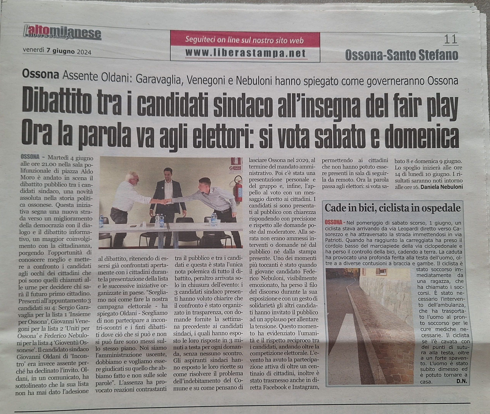

Perché l'ho fatto
Volevo partecipare in prima persona alla vita del mio paese. Una candidatura significa esporsi, raccogliere idee, parlare con persone che vedono i problemi in modi diversi e provare a costruire una proposta condivisa.
Che cosa ho imparato
L'esperienza mi ha chiesto di spiegare le idee con chiarezza, ascoltare obiezioni e prendere decisioni anche quando non erano semplici. Non la presento come un titolo professionale: è una parte del mio percorso personale che racconta come mi metto in gioco.
Materiali della campagna
Il dépliant della lista e un articolo sul dibattito pubblico tra i candidati. Seleziona un'immagine per aprirla a dimensione piena.
Gioventù Ossonese su Facebook


Un dato verificabile
La lista Gioventù Ossonese ha ottenuto 198 voti, pari all'8,64% dei voti validi. I dati sono riportati nella scheda elettorale della Città metropolitana di Milano.